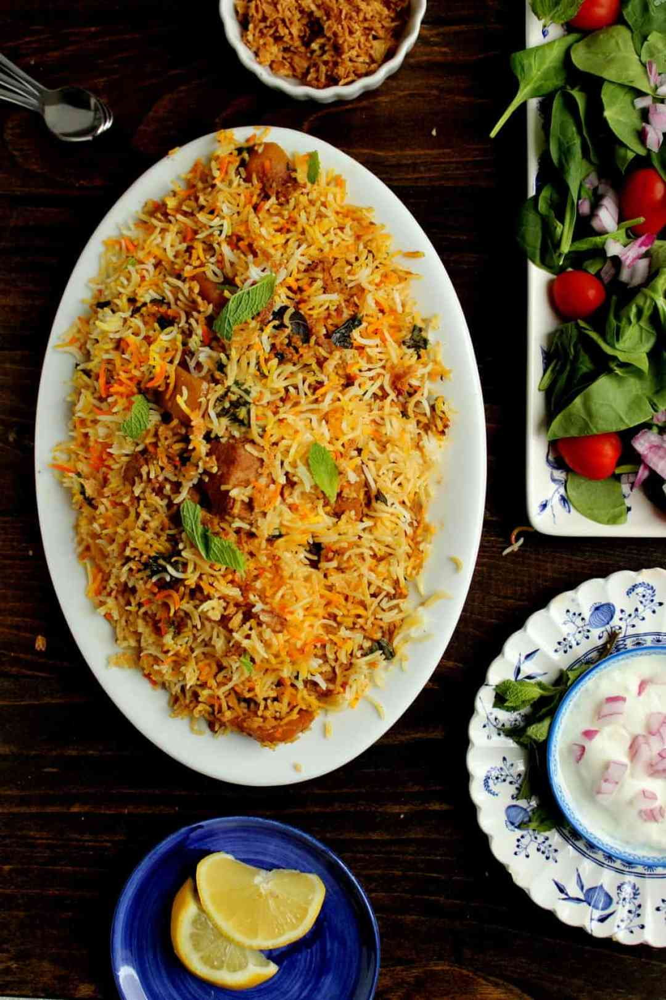

My Recipies
One of the most royal delicacies that you can enjoy on any occasion or festival, Chicken Biryani is the epitome of a one-pot meal. Well, no one can resist the sight of the aromatic and delicious Chicken Biryani recipe. If you are also craving for that, then you need not go anywhere as we have got this super-easy biryani recipe for you. So, what are you waiting for? Do try this delicious Chicken Biryani recipe and enjoy it with your loved ones.

Biriyani Recipies
When it comes to biryani, I always go with chicken. Bone-in chicken pieces like drumstick or
leg-thigh pieces make excellent biryanis. I seldom make mutton or goat biryani as I am not a fan of
mutton. I love beef but haven’t tried making biryani with it.
Last week, I had received an email from one my readers asking me to share the recipe for making beef
biryani. I had been thinking of making beef biryani for so long, and now the email request inspired
me to make up my mind to make beef biryani over the weekend.

Haleem Recipies
Haleem is a rich mutton stew, popular in the Middle East and Asia. As common as it is in India, particularly in Hyderabad, it is surprising to know that Haleem actually has Persian roots. It is eaten in plenty of other parts of the world but most commonly by Muslims, especially in the holy month of Ramadan, for the Iftar while breaking their fast.Ingredients of Haleem Recipe | Haleem: With lentils, spices and broken wheat, it is a slow-cooked delicacy usually enjoyed during Eid festivities.

Khichdi Recipies
Khichdi is synonymous to 'comfort' for all. It is one of the quickest meals we can choose to make on a lazy or a busy day. But did you ever imagine pairing a bowl of khichdi with chicken? Don't be surprised! We bring you a rich and luscious recipe from Bengal that may change your perception about khichdi. It's called Bhuna Khichuri (or Bhuni Khichuri). This one-pot meal is basically a dried and spicier version of khichdi that includes oodles of ghee and dry fruits. You can find both veg and non-veg version of bhuna khichuri recipe.